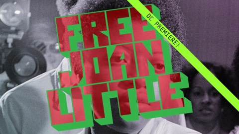

About the film
Seeking to uncover the origins of the rabid homophobia of the conservative church, a gay seminary scholar and a straight activist make a shocking discovery: In 1946 an erroneous translation of the term homosexual in the Bible that has been weaponized against the LGBTQIA+ community ever since.
At the festival
- 2023 DC Premiere · Sunday, November 5, 2023 · 1:30 PM · Martin Luther King, Jr. Memorial LibraryFollowed by post-screening discussion with director Sharon “Rocky” Roggio.
More films on these topics
 Bikram: Yogi, Guru, PredatorEva Orner2019 · 86 min
Bikram: Yogi, Guru, PredatorEva Orner2019 · 86 min The Rape of Recy TaylorNancy Buirski2017 · 91 min
The Rape of Recy TaylorNancy Buirski2017 · 91 min
Free Joan LittleYoruba Richen2026 · 36 min- My Brother's KillerMy Brother’s Killer2026 · 95 min
- Short Strand: Minneapolis: On the Record + A Special ScreeningLaura Poitras, Rachel Lauren Mueller · Anne Sundberg · Yoruba Richen, Christalyn Hampton2026
 Killing AnnaSam Benstead2026 · 76 min
Killing AnnaSam Benstead2026 · 76 min